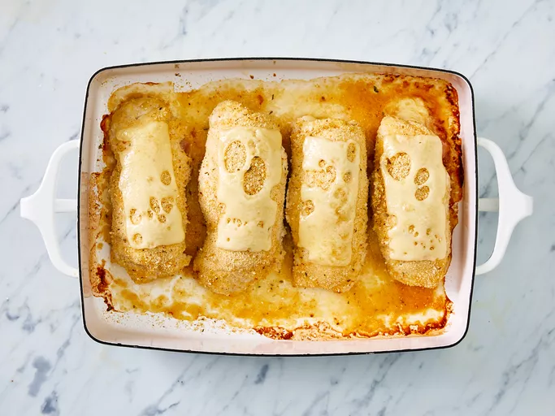

Chicken Cordon Bleu
- Chicken Cordon Bleu
- This entree is easy and delicious! It's one of my husband's favorites! Try to use the largest chicken breasts you can find so you'll be able to roll them easier.

Ingredients
- nonstick cooking spray
- 4 skinless, boneless chicken breast halves
- ¼ teaspoon salt
- ⅛ teaspoon ground black pepper
- 6 slices Swiss cheese
- 4 slices cooked ham
- ½ cup seasoned bread crumbs
Steps
- Preheat an oven to 450 degrees F (230 degrees C)
- Place chicken breasts between two sheets of heavy plastic (resealable freezer bags work well) on a solid, level surface. Firmly pound chicken with the smooth side of a meat mallet to a thickness of 1/2-inch.
- Season chicken thoroughly with salt and pepper. Using a sifter or strainer; sprinkle flour over chicken breasts, evenly coating both sides
- Beat eggs in a shallow bowl and set aside.
- Mix bread crumbs and 1/2 cup Parmesan cheese in a separate bowl, set aside.
- Dip a flour-coated chicken breast in beaten eggs. Transfer breast to the bread crumb mixture, pressing crumbs into both sides. Repeat for each breast. Let chicken rest for 10 to 15 minutes.
- Heat 1/2 inch olive oil in a large skillet on medium-high heat until it begins to shimmer. Cook chicken in the hot oil until golden, about 2 minutes per side. The chicken will finish cooking in the oven.
- Transfer chicken to a baking dish. Top each breast with 2 tablespoons tomato sauce. Layer each chicken breast with equal amounts of mozzarella cheese, fresh basil, and provolone cheese. Sprinkle remaining Parmesan over top and drizzle each with 1/2 teaspoon olive oil.
- Gather all ingredients.
- Preheat oven to 350 degrees F (175 degrees C). Coat a 7x11-inch baking dish with nonstick cooking spray.
- Pound chicken breasts to 1/4 inch thickness.
- Sprinkle each piece of chicken on both sides with salt and pepper. Place 1 Swiss cheese slice and 1 ham slice on top of each breast.
- Roll up each breast and secure with toothpicks.
- Place in the prepared baking dish and sprinkle chicken evenly with bread crumbs.
- Bake in the preheated oven until chicken is no longer pink, 30 to 35 minutes.
- Remove from the oven, and place 1/2 Swiss cheese slice on top of each breast.
- Return to the oven until cheese has melted, 3 to 5 minutes. Remove toothpicks and serve immediately.